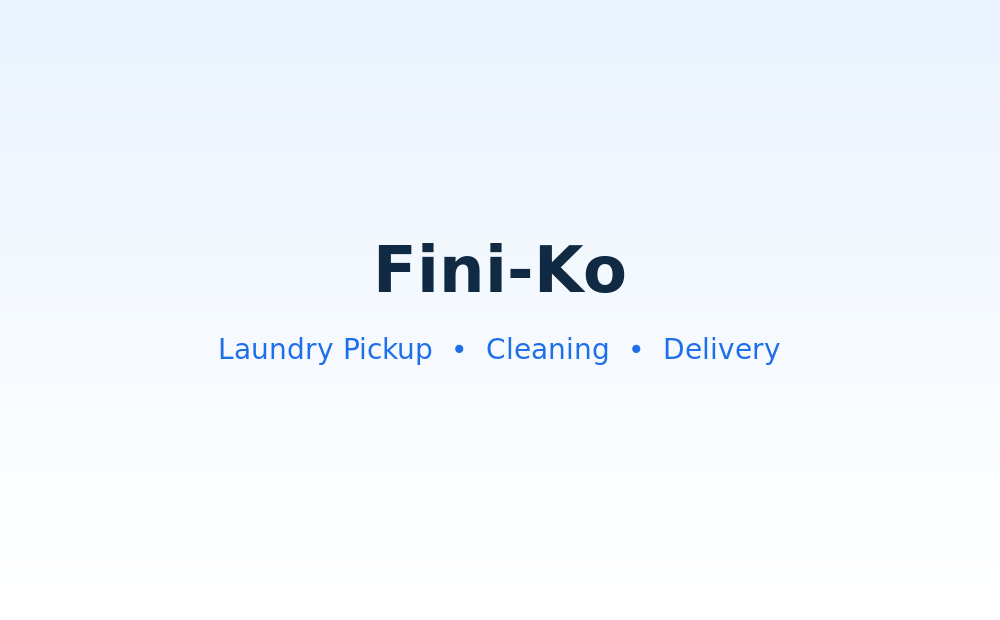

Pickup & Delivery
Schedule a convenient pickup and receive your clean laundry at your selected location.
Laundry made easier
Fini-Ko is a proposed laundry pickup, cleaning, and delivery platform designed to make laundry more convenient for busy Bronx residents.

Planned services
The future Fini-Ko platform can support different laundry options, customer preferences, and convenient pickup and delivery services.
Schedule a convenient pickup and receive your clean laundry at your selected location.
Future orders can include preferences such as cold wash, detergent choice, and fold style.
Customers can follow an order from pickup through cleaning, folding, and delivery.
How it works
Choose a pickup time and provide your laundry preferences.
A laundry professional picks up the order.
The laundry is cleaned, dried, and folded according to the order.
The finished laundry is delivered back to the customer.
About Fini-Ko
Fini-Ko is a proposed sales platform for laundry pickup, cleaning, and delivery. The project is designed with future customer accounts, service listings, booking, payment, order tracking, and database features in mind.
The homepage provides a foundation for future PHP and SQL development while keeping the current website simple, readable, and responsive.
Future platform
This section can later connect to registration, booking, and customer support features.